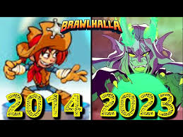

História do Brawlhalla
O Brawlhalla surge, em 2014, inspirado no criador do sub-gênero jogo de plataforma, super smash bros, jogo da nintendo. Inicialmente, o jogo não tinha a proposta de cada Lenda ter sua própria combinação única de armas, no entando, essa ideia foi implementada cedo, tornando-o um jogo ainda mais único. Com decorrer do desenvolvimento de Brawlhalla, cada vez mais armas e personagens eram lançados ao jogo, enriquecendo os estilos de jogos e estratégias dos jogadores.
O jogo somente foi publicado em 2017, já com uma comunidade fiel e inúmeros jogadores ativos, assim, o primeiro campeonato mundial de Brawlhalla foi feito no início de 2017, em Atlanta. Logo após o campeonato, a ubisoft se interessou pelo jogo e comprou-o, assim abrindo possibilidades para parcerias e maiores investimentos no jogo por ser uma empresa grande.
O aumento das premiações e parcerias com outros jogos trouxeram ainda mais jogadores para o Brawlhalla e movimentou o cenário competitivo. Toda essa comoção trouxe um jogador americano chamado sandstorm para o jogo, o qual foi campeão do campeonato mundial de 1v1 e de 2v2 em 2018 e 2019. No entanto, com a chegada da pandemia, os campeonatos presenciais foram suspensos, mas quando voltaram, em 2022, a hegemonia americana ainda se mantinha